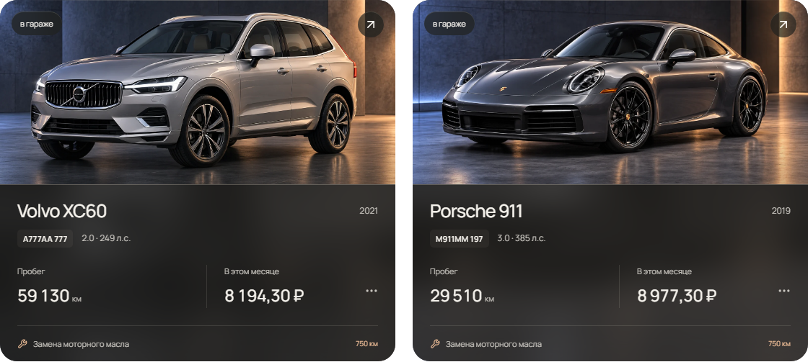

Записывайте.
Заправки, расходы и чеки. Вносите без интернета, синхронизируйте позже.
Личное пространство для каждого автомобиля, расхода и километра.

Заправки, расходы и чеки. Вносите без интернета, синхронизируйте позже.
Точный расход топлива. Понятные затраты. Покупка и продажа учитываются отдельно.
История работ, замеры шин и напоминания. Всё в одном месте.